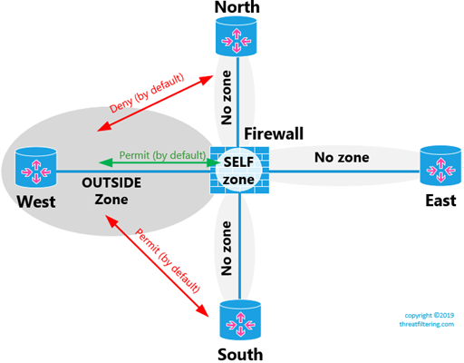
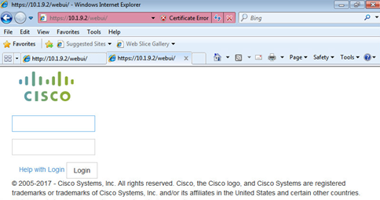

Cisco Zone Based Firewall Configuration Step By Step: Part 1
This article is the first part of Cisco Zone Based firewall configuration. It provides technology overview, configuration constructs and simple network configuration example. The part 2 will provide more complex examples with NAT, DMZ, VPNs and operation of self zone.
Overview
Cisco zone-based firewall (ZBF) is a feature of a Cisco router running IOS or IOS-XE. It is replacement for older CBAC (Context-Based Access Control) – “ip inspect” based configuration. Main difference is that ZBF uses zones with default “deny any” policy, and so called C3PL (Cisco Common Classification Policy Language) with class-maps and policy-maps constructs for classification and policy application.
Cisco feature navigator (www.cisco.com/go/fn) displays routers, software version and the licensing level required to enable firewall functionality, as shown in the screenshot below. The first software version with ZBFW support is IOS 12.4(6)T, and IOS-XE 16.10.1a.
Always check release notes and documentation for the specific platform, as licensing can change and this feature can be licensed separately. For example, at the time of writing ASR1000 requires additional feature license which is not part of any technology packages.
Stateful Firewall Technology
As the name implies, stateful firewall monitors the state of the session. In comparison with stateless packet filters, which require access rules to be applied bi-directionally, stateful firewall requires only initial direction of the session to be allowed in the rule. Return traffic is allowed by router being able to match it to the existing session.
Session can be a single TCP or UDP flow when only transport-protocol level specifics must be tracked. And in more complex scenarios, it can be several sessions, for example, control flow of FTP or SIP, where secondary communications channels are created as separate flows.
ZBF is stateful and can work with both simple transport-layer sessions and higher-level application protocols.
Zones and Interfaces
An administrator can designate parts of the network with different security requirements as security zones. A firewall or multiple firewalls are usually deployed on the boundary of the zones. For example, Internet, DMZ and LAN can represent 3 different security zones.
An interface or multiple interfaces can then be assigned to those zones. When traffic arrives on a interface, it is classified as sourced from the zone this interface belongs. Traffic between interfaces of the same zone is allowed and traffic between interfaces in different zones is implicitly denied.
There is a special zone called Self. It represents the router itself and by default the traffic to or from the router is implicitly allowed.
How to Control Traffic Between Zones
Now, let’s compare the difference between non-zone-based (such as ACLs, CBAC and even ASA) to zone-based approaches (Cisco ZBF).
Consider topology in the example below. In this sample topology, we want to apply our security policy, so DMZ can access Internet without any restrictions, however, only single SQL server on a single TCP port (MS SQL – 1433) on the LAN segment must be accessible.
Traditional ACL/CBAC
Without zones, you would apply an ACL in ingress direction to DMZ interface of the firewall. On the left side of the diagram you can see 3 entries displayed. Requirement to provide Internet access to DMZ network causes us to put “permit any” rule on the very bottom. This rule opens access to Trust network, so we now have to put explicit deny entry #2 for LAN IP range.
There are 2 potential issues with this configuration.
Let’s say that we provision another LAN network with IP address of 10.1.6.0/24. We will require to go back and adjust configuration, so the DMZ is prohibited to access to this new network. While there is a workaround, if we will replace line #2 with deny statement to entire RFC1918 range, it is still would be more convenient to be able to use “AND” statement with line #3, stating that rule applies only if the egress is Internet-facing interface (or zone).
The other issue, is that readability of the ruleset is not great, as we need to infer where each IP prefix is located.
Zone-based Approach
On the right side of the diagram, the same ruleset is encoded with zone-based approach. By being able to specify destination zone, we can now ensure that “permit any” rule doesn’t affect LAN or any other security zone that we can introduce in the future. It is also self-documenting, as we can clearly see direction of the traffic without having to look at the specific subnets. With larger ruleset this benefit is especially noticeable.
Cisco ZBF enforces that a dedicated policy to be created between exactly one source and one destination zone. Cisco uses term zone-pair to identify such relationship. Note that zone-pair is directional, i.e. two zones initiating traffic to each other will have two zone pairs.
Other vendor firewalls, such as Fortinet, Palo Alto Networks and Juniper, allow rules to contain multiple zones or even “any” keyword representing all zones in a single rule. However, it is up to administrator to either use this functionality or not to balance between number of rules and configuration readability.
Configuration Elements
C3PL (or Cisco Common Classification Policy Language) is similar to the way how QoS is configured on Cisco routers. The configuration is done using the following elements:
- Interfaces
- Zones
- Zone Pairs
- Service Policies
- Policy Maps
- Class Maps
- Access Lists
The diagram below shows how all the components interact with each other. Lines on the left with numbers display configuration order.

Practical Example
The diagram below shows topology that will be used in the next few examples. Static default route is configured on every spoke router.
Initial Connectivity Test
To confirm that there is connectivity prior to applying any rules, let’s ping all other routers from WEST.
! East is reachable
WEST#ping 10.1.3.2
Type escape sequence to abort.
Sending 5, 100-byte ICMP Echos to 10.1.3.2, timeout is 2 seconds:
!!!!!
Success rate is 100 percent (5/5), round-trip min/avg/max = 1/1/2 ms
! South is reachable
WEST#ping 10.1.6.2
Type escape sequence to abort.
Sending 5, 100-byte ICMP Echos to 10.1.6.2, timeout is 2 seconds:
!!!!!
Success rate is 100 percent (5/5), round-trip min/avg/max = 1/1/2 ms
! Firewall is reachable
WEST#ping 10.1.9.1
Type escape sequence to abort.
Sending 5, 100-byte ICMP Echos to 10.1.9.1, timeout is 2 seconds:
!!!!!
Success rate is 100 percent (5/5), round-trip min/avg/max = 1/1/1 ms
! North is reachable
WEST#ping 10.1.12.2
Type escape sequence to abort.
Sending 5, 100-byte ICMP Echos to 10.1.12.2, timeout is 2 seconds:
!!!!!
Success rate is 100 percent (5/5), round-trip min/avg/max = 1/1/2 ms
Communication Between Zoned, Non-zoned Interfaces and Self Zone
The diagram below shows how such communication works by default.
Let’s now create a security zone called OUTSIDE and move WEST-facing interface to this zone.
FIREWALL(config)#zone security OUTSIDE
FIREWALL(config-sec-zone)#description OUTSIDE
FIREWALL(config-sec-zone)#exit
FIREWALL(config)#interface gi2.9
FIREWALL(config-subif)#zone-member security OUTSIDE
FIREWALL(config-subif)#end
! The command below shows summary of zones and interface assignment
FIREWALL#show zone security
zone self
Description: System defined zone
zone OUTSIDE
Description: OUTSIDE
Member Interfaces:
GigabitEthernet2.9
Tests Sourced From a Zoned Interface
In the next example some of the previous tests are re-launched to see how it affects traffic.
! We cannot reach any other spoke routers
WEST#ping 10.1.3.2
Type escape sequence to abort.
Sending 5, 100-byte ICMP Echos to 10.1.3.2, timeout is 2 seconds:
.....
Success rate is 0 percent (0/5)
! We still can ping the firewall address
WEST#ping 10.1.9.1
Type escape sequence to abort.
Sending 5, 100-byte ICMP Echos to 10.1.9.1, timeout is 2 seconds:
!!!!!
Success rate is 100 percent (5/5), round-trip min/avg/max = 1/1/1 ms
Tests Sourced From a Non-Zoned Interface
And another set of tests to check how the configuration affected reachability from NORTH router.
! West, which is now part of OUTSIDE zone is not reachable
NORTH#ping 10.1.9.2
Type escape sequence to abort.
Sending 5, 100-byte ICMP Echos to 10.1.9.2, timeout is 2 seconds:
.....
Success rate is 0 percent (0/5)
! East is still reachable
NORTH#ping 10.1.3.2
Type escape sequence to abort.
Sending 5, 100-byte ICMP Echos to 10.1.3.2, timeout is 2 seconds:
!!!!!
Success rate is 100 percent (5/5), round-trip min/avg/max = 1/1/1 ms
! South is still reachable
NORTH#ping 10.1.6.2
Type escape sequence to abort.
Sending 5, 100-byte ICMP Echos to 10.1.6.2, timeout is 2 seconds:
!!!!!
Success rate is 100 percent (5/5), round-trip min/avg/max = 1/1/2 ms
! The firewall is still reachable
NORTH#ping 10.1.12.1
Type escape sequence to abort.
Sending 5, 100-byte ICMP Echos to 10.1.12.1, timeout is 2 seconds:
!!!!!
Success rate is 100 percent (5/5), round-trip min/avg/max = 1/1/1 ms
These examples demonstrate that network connected to an interface that belongs to a zone, by default, cannot communicate to networks connected to interfaces that are not assigned to any zones.
We can also see that communication to the router itself is reachable from both zoned and non-zoned interfaces.
Communication Between Interfaces-Members of the Same Zone
The following diagram shows how this communication works.
In the following example we will assign NORTH-facing interface to OUTSIDE zone, so both WEST and NORTH routers are in the same zone.
FIREWALL(config)#interface gi2.12
FIREWALL(config-subif)#zone-member security OUTSIDE
FIREWALL(config-subif)#end
FIREWALL#show zone security
zone self
Description: System defined zone
zone OUTSIDE
Description: OUTSIDE
Member Interfaces:
GigabitEthernet2.9
GigabitEthernet2.12
Both North and West can now ping each other, as shown in the example below.
NORTH#ping 10.1.9.2
Type escape sequence to abort.
Sending 5, 100-byte ICMP Echos to 10.1.9.2, timeout is 2 seconds:
!!!!!
Success rate is 100 percent (5/5), round-trip min/avg/max = 1/1/2 ms
WEST#ping 10.1.12.2
Type escape sequence to abort.
Sending 5, 100-byte ICMP Echos to 10.1.12.2, timeout is 2 seconds:
!!!!!
Success rate is 100 percent (5/5), round-trip min/avg/max = 1/1/2 ms
Note that it’s possible to apply rules for intra-zone traffic by using zone-pairs with the same source and destination zones.
Default Zone
The default zone is a construct that allows you to implicitly assign “no-zone” interfaces to a default zone. Then you can use default zone in zone-pairs. As the result, you can override no-communication rule between zoned and non-zoned interfaces.
FIREWALL(config)#zone security default
FIREWALL(config-sec-zone)#end
FIREWALL#show zone security
zone self
Description: System defined zone
zone OUTSIDE
Description: OUTSIDE
Member Interfaces:
GigabitEthernet2.9
GigabitEthernet2.12
zone default
Description: System level zone. Interface without zone membership is in this zone automatically
Communication Between Zones: Inside To Outside
Communications between zones is denied by default.
First, we will create INSIDE zone and move NORTH-facing interface of the FIREWALL to this new zone and confirm that there is no communication.
FIREWALL(config)#zone security INSIDE
FIREWALL(config-sec-zone)#exit
FIREWALL(config)#int gi2.12
FIREWALL(config-subif)#zone-member security INSIDE
FIREWALL(config-subif)#end
FIREWALL#show zone security
zone self
Description: System defined zone
zone OUTSIDE
Description: OUTSIDE
Member Interfaces:
GigabitEthernet2.9
zone default
Description: System level zone. Interface without zone membership is in this zone automatically
zone INSIDE
Member Interfaces:
GigabitEthernet2.12
Perform Traffic Classification: Access Lists
Let’s implement the following simple rules for the example network:
- Allow ICMP from INSIDE to OUTSIDE for all hosts
- Allow HTTP and HTTPS from INSIDE to OUTSIDE for a single internal workstation
The diagram below shows what we will implement in this section.
The configuration of new interface on NORTH and additional static route on the FIREWALL is straightforward and shown here only for completeness:
NORTH(config)#int gi3
NORTH(config-if)#ip address 172.16.2.1 255.255.255.0
NORTH(config-if)#no shut
FIREWALL(config)#ip route 172.16.2.0 255.255.255.0 10.1.12.2
ICMP traffic doesn’t have any IP restrictions in our scenario, so we will not be defining ACL for it.
For VM’s HTTP and HTTPS traffic, we can write several types of ACLs with broad classification on the top and very granular on the bottom, as shown in the examples below:
!Option 1
FIREWALL(config)#ip access-list extended VM-TO-ANY
FIREWALL(config-ext-nacl)# permit ip host 172.16.2.50 any
!Option 2
FIREWALL(config)#ip access-list extended VM-TO-ANY-HTTP-HTTPS
FIREWALL(config-ext-nacl)# permit tcp host 172.16.2.50 any eq www
FIREWALL(config-ext-nacl)# permit tcp host 172.16.2.50 any eq 443
!Option 3
FIREWALL(config)#ip access-list extended VM-TO-ANY-HTTP
FIREWALL(config-ext-nacl)# permit tcp host 172.16.2.50 any eq www
FIREWALL(config)#ip access-list extended VM-TO-ANY-HTTPS
FIREWALL(config-ext-nacl)# permit tcp host 172.16.2.50 any eq 443
All of 3 options can be used to achieve the same result when used in class-map in combination with protocol matching.
First option is highly reusable, so if you need to define protocol inspection for multiple protocols, you can use the same ACL for all class-maps. However, if you omit “match protocol” statement in class-map, VM will have unrestricted access due to the fact that there is no filtering done on ACL level.
The last option defines every single protocol that is being allowed as a separate ACL. The configuration is self-documenting, however, it can grow to very large list of statements which may be difficult to support.
The second option is balanced by grouping all access requirements for a single host, or group of hosts under the same access list, ensuring that ACL, even when applied without “match protocol” statement, provides only required access for the host.
Perform Traffic Classification: Class Maps
The next step is to create associated class-maps. Let’s define class for ICMP first:
FIREWALL(config)#class-map type inspect match-all ICMP
FIREWALL(config-cmap)#match protocol icmp
For HTTP/HTTPS traffic let’s use generic version of access list from the previous section.
FIREWALL(config)#ip access-list extended VM-TO-ANY
FIREWALL(config-ext-nacl)# permit ip host 172.16.2.50 any
Class-maps can use Boolean AND logic with match-all keyword or Boolean OR logic when match-any keyword is used. In our case, we want both ACL and protocol to match. However, between protocols we want OR logic, as traffic cannot match 2 different protocols at the same time.
One option is to use two different class-maps, as shown in the example below.
FIREWALL(config)#class-map type inspect match-all VM-HTTP-TRAFFIC
FIREWALL(config-cmap)#match access-group name VM-TO-ANY
FIREWALL(config-cmap)#match protocol http
FIREWALL(config-cmap)#exit
FIREWALL(config)#class-map type inspect match-all VM-HTTPS-TRAFFIC
FIREWALL(config-cmap)#match access-group name VM-TO-ANY
FIREWALL(config-cmap)#match protocol https
FIREWALL(config-cmap)#exit
More efficient approach is to use a nested class-map which will either match HTTP or HTTPS (Boolean OR). It will be then used in the parent class-map which will look for matching both IP access list and the child class-map (Boolean AND).
! This class-map matches either HTTP or HTTPS due to match-any keyword
FIREWALL(config)#class-map type inspect match-any VM-ALLOWED-PROTOCOLS
FIREWALL(config-cmap)#match protocol http
FIREWALL(config-cmap)#match protocol https
FIREWALL(config-cmap)#exit
! This class-map matches both VM-TO-ANY ACL and VM-ALLOWED-PROTOCOLS Class-map
FIREWALL(config)#class-map type inspect match-all VM-ALLOWED-TRAFFIC
FIREWALL(config-cmap)#match access-group name VM-TO-ANY
FIREWALL(config-cmap)#match class-map VM-ALLOWED-PROTOCOLS
FIREWALL(config-cmap)#exit
Note that order of “match protocol” statements is important. Always insert protocol-specific statements above generic match protocol tcp or udp statements. For example, FTP matches both application-level and TCP-level inspection, however, if FTP is treated as generic TCP protocol, firewall will not inspect and allow connectivity for the secondary channel.
Binding Everything Together with Policy Maps and Zone Pairs
Now we know what traffic we want to permit, it’s time to apply individual policy actions to classes and bind the configuration to directional zone-pair.
FIREWALL(config)#policy-map type inspect INSIDE-TO-OUTSIDE
FIREWALL(config-pmap)# class type inspect ICMP
FIREWALL(config-pmap-c)#inspect
FIREWALL(config-pmap-c)#exit
FIREWALL(config-pmap)#class type inspect VM-ALLOWED-TRAFFIC
FIREWALL(config-pmap-c)#inspect
FIREWALL(config-pmap-c)#exit
FIREWALL(config-pmap)#exit
FIREWALL(config)#zone-pair security ZONE-PAIR-INSIDE-TO-OUTSIDE source INSIDE destination OUTSIDE
FIREWALL(config-sec-zone-pair)#service-policy type inspect INSIDE-TO-OUTSIDE
To perform testing HTTP and HTTPS services are enabled on WEST router:
WEST(config)#ip http server
WEST(config)#ip http secure-server
From a test workstation, let’s perform tests and then use show commands to see the results.
All data plane tests are successful.
The following command displays detailed statistics about each protocol.
FIREWALL#show policy-map type inspect zone-pair ZONE-PAIR-INSIDE-TO-OUTSIDE
Zone-pair: ZONE-PAIR-INSIDE-TO-OUTSIDE
Service-policy inspect : INSIDE-TO-OUTSIDE
Class-map: ICMP (match-all)
Match: protocol icmp
Inspect
Packet inspection statistics [process switch:fast switch]
icmp packets: [0:22]
Session creations since subsystem startup or last reset 2
Current session counts (estab/half-open/terminating) [0:0:0]
Maxever session counts (estab/half-open/terminating) [1:0:0]
Last session created 00:07:40
Last statistic reset never
Last session creation rate 0
Last half-open session total 0
Class-map: VM-ALLOWED-TRAFFIC (match-all)
Match: access-group name VM-TO-ANY
Match: class-map match-any VM-ALLOWED-PROTOCOLS
Match: protocol http
Match: protocol https
Inspect
Packet inspection statistics [process switch:fast switch]
tcp packets: [0:2014]
http packets: [0:1279]
Session creations since subsystem startup or last reset 256
Current session counts (estab/half-open/terminating) [0:0:0]
Maxever session counts (estab/half-open/terminating) [3:1:0]
Last session created 00:00:06
Last statistic reset never
Last session creation rate 97
Last half-open session total 0
Class-map: class-default (match-any)
Match: any
Drop (default action)
6 packets, 576 bytes
To display list of sessions use the following command:
FIREWALL#show policy-firewall sessions platform
--show platform hardware qfp active feature firewall datapath scb any any any any any all any --
s=session i=imprecise channel c=control channel d=data channel
Session ID:0x00000159 172.16.2.50 49499 10.1.9.2 443 proto 6 (0:0) [sd]
Session ID:0x00000157 172.16.2.50 8 10.1.9.2 1 proto 1 (0:0) [sc]
Session ID:0x00000158 172.16.2.50 49498 10.1.9.2 443 proto 6 (0:0) [sd]
Coexistence with Access Lists Applied to the Interface
Let’s block ICMP traffic input on the interface level while allowing everything else on NORTH-facing interface, which is part of security zone.
FIREWALL(config)#ip access-list extended DENY_ICMP
FIREWALL(config-ext-nacl)#deny icmp any any
FIREWALL(config-ext-nacl)#permit ip any any
FIREWALL(config-ext-nacl)#end
FIREWALL(config)#int gi2.12
FIREWALL(config-subif)#ip access-group DENY_ICMP in
Ping no longer works, as shown in the screenshot below, meaning that inbound ACLs are being evaluated first, and as result must either not be used or have more permissive settings that zone-based configuration.